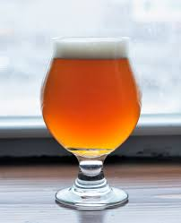

WOSZ
WOSZ

Lager
Klasyczne piwo dolnej fermentacji, które swój początek wzięło od bawarskiego stylu Helles (monachijskie jasne). Obecnie jeden z najpopularniejszych gatunków w Europie.

APA - American Pale Ale
Jasne, lekkie, szczodrze nachmielone, przeważnie dość goryczkowe i bardzo aromatyczne piwo. APA nie są piwami mocnymi, to raczej lekkie i orzeźwiające pozycje. Goryczka w tym stylu także nie powinna wykręcać języka i twarzy w grymasie.
IPA - India Pale Ale
India Pale Ale to jasne piwo naładowane chmielem po brzegi. Średnia moc, masa aromatów i smaków chmielowych. Do tego fest goryczka.

Witbier
Tradycyjne, belgijskie piwo pszeniczne zwane również biere blanche (białe piwo). Witbier jest warzony metodą górnej fermentacji i niefiltrowany, a ze względu na dodatek niesłodowanej pszenicy może być bardzo mętny.
Stout
Ciemne piwo górnej fermentacji, rodzaj ale. Zdaniem niektórych stout wywodzi się bezpośrednio od porteru (nazwa użyta pierwszy raz w 1721 roku, na określenie ciemnego piwa warzonego z palonego słodu), inni zaś twierdzą, że obie nazwy są tożsame (chociaż określenie stout było używane już wcześniej, pojawiając się pierwszy raz w 1677 roku).
Porter bałtycki
Ciemne piwo dolnej fermentacji warzone z kombinacji słodów jasnych i ciemnych. Przez Beer Judge Certification Program (BJCP) klasyfikowane w kategorii Europejskie Piwa Mocne wspólnie z bockiem i doppelbockiem.